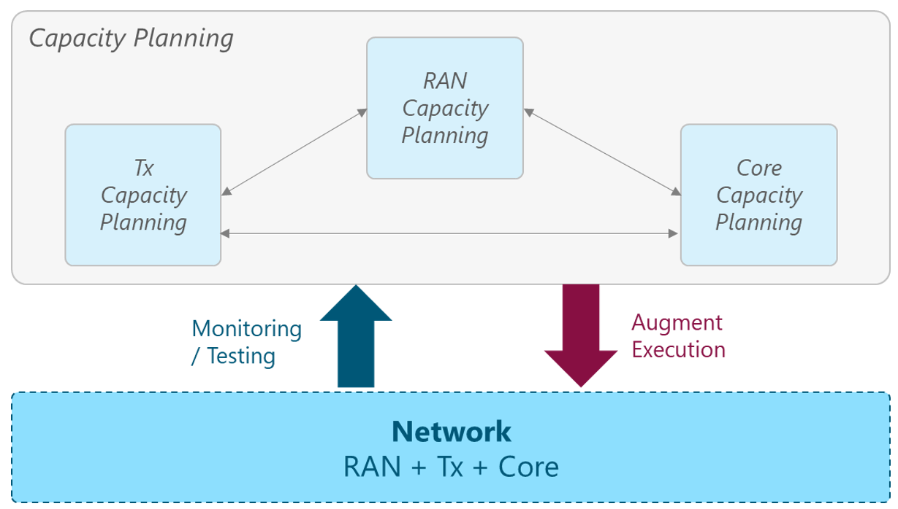
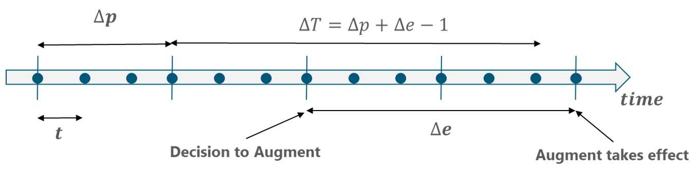

1 Introduction
Capacity Planning (CP) is a process that contributes to over-watch the network resources of the NaaS operator, predicting the network behavior based on its most important metrics and schedule actions to add capacity when necessary. A well-organized plan will minimize the risk of network congestions, bottlenecks, and outages. Additionally, it'll enhance the network utilization by reducing the idle resources due to over dimensioning.
The forecast analysis of a network is quite complex, the easiest way to overcome this complexity is dividing the network into segments such as radio access network (RAN), transport and mobile core. Even further, a better segmentation when performing CP is to subdivide those areas by their equipment and the capacity indicators or capacity managed objects (CMOs).
The Capacity Planning module offers instruction on the overall tasks required in a mobile network to cope with its inherent growth and development. These activities go from the identification of the CMOs to the definition of a concrete plan for carrying out the required capacity augments
This module provides guidelines to identify the most relevant CMOs from RAN, transport and mobile core. For each CMO, a list of network metrics is derived based on its impact on the CMO and the network. These network metrics show the utilization of the resources and may represent a bottleneck when resources are fully utilized. To avoid capacity bottlenecks, an increase in the capacity must be planned and implemented before this happens.
Since RAN, transport and mobile core differ from one to another, different CMOs, thresholds, metrics and planning should be uniquely described. For this reason, this module is divided into four sections: (1) Fundamentals, CP in (2) RAN, (3) transport and (4) mobile core.
After going through this module, the NaaS operator will be able to identify the CMOs in their network, perform a forecast analysis of the relevant metrics and plan the augments before the metrics cross their respective thresholds.
1.1 Module Objectives
This module will allow NaaS operators to estimate the network behavior and plan capacity augments accordingly before capacity outages occur. The specific objectives of this module are to:
1.2 Module Framework
The Module Framework in Figure 1 describes the structure, interactions, and dependencies among different NaaS operator areas.
Strategic Plan & Scope and High-level Network Architecture drive the strategic decisions to forthcoming phases. Once the network is in operations, the Field Maintenance and Post-Launch Engineering activities are required to ensure proper functioning of the network.
The Capacity Planning module is included within the Post-Launch Engineering stream and has a direct relation with the Field Maintenance and the Operations & Maintenance Streams. The Module Framework in Figure 1 describes the structure, interactions and dependencies among different NaaS operator areas.
Figure 1 - Post-Launch Engineering Framework
Figure 2 presents the CP functional view, where the main functional components are exhibited.
Figure 2 - CP Functional View
2 CP Fundamentals
This section provides an overview of the baseline concepts of the CP process and its relevance for NaaS operators. Furthermore, an examination of each of the CP process' steps is provided to guide NaaS operators through their implementation.
2.1 CP Imperative
CP is the process of planning a network based on utilization, bandwidth, and other network capacity constraints. Furthermore, it's a type of management process that assists network administrators in planning for network infrastructure in line with current and future operations.
CP involves calculating the capacity required to support the expected network growth and finding ways of making that capacity available via the implementation of capacity augments. Furthermore, CP ensures that the network capacity is utilized in the most cost-effective and timely manner.
The relationship between CP and Performance Management relies on their specific scope. Performance Management focuses on optimizing the existing network elements to improve the performance. In contrast, CP determines the future network requirements using the current performance as a baseline.
The main issues addressed by the CP process are examined as follows.
Avoid Capacity Outages
Minimize Idle Capacity
Improve Operational Efficiency
Figure 3 illustrates the CP concept for NaaS operators. It maintains a CP process for each of the network segments (i.e., RAN, Tx, core) as each of them has particular requirements; however, interrelationships among the different processes are present. Each of these processes is described in a separate section of this module.

Figure 3 - CP Concept in the NaaS environment.
A deep examination of the fundamental aspects of CP can be found in the Primer on Capacity Planning Fundamentals document.
2.2 CP Baseline Concepts
The aim of this section is to present the key concepts related to CP that will be used along the rest of this module.
CMO
A CMO is a network resource that is capacity sensitive and is prone to present capacity outages. The CP process keeps track of three essential measurements for each CMO:
Capacity Augment
A capacity augment is an expansion on any of the CMOs that augments its total capacity. There are mainly two approaches to augment the CMOs:
Capacity Augment Cycle Time
The capacity augment cycle time is the total amount of time required to implement a specific capacity augment. Among the activities that might be performed to implement a capacity augment are:
2.3 CP Framework
As previously discussed, CP has a direct relationship with the NaaS operator network, including all the network segments (RAN, Tx, Core). Figure 4 illustrates the CP framework.
Figure 4 - CP framework
As shown in Figure 4, there are two phases in the CP process:
The framework illustrated in Figure 4 is applied for each network segment (i.e., RAN, Tx, core). To facilitate understanding of the specifics, the rest of this section is focused on the generic approach, which will be used as the baseline for the specific processes on each network segment in Sections 3 to 5.
The following subsections describe the main interactions between the CP process and the NaaS Operator Network.
Initial Network Information Collection
The Capacity Framework Setup phase requires certain initial information regarding the network status. Table 1 presents the input data and their respective candidate sources. Furthermore, the impact of the inputs on the CP process is examined.
|
Input Required |
Description |
Candidate Source |
Impact |
|
Network Architecture |
Includes the technologies and reference architectures to be included in the network design. |
RAN / Tx & IP / Core Architecture Module |
Establishes the network technologies and their respective design guidelines that are implemented in the network. |
|
Network Topology |
Current view of the network elements topology in the live network, including the links among them. |
Primary: Network Mgmt
Systems |
Determines the capacity requirements for each network element. |
|
Network Performance Data |
Includes the information regarding performance (e.g., utilization) that is collected or measured from the network elements. |
Network Management Systems |
Required data to perform the Forecast Analysis. The more accurate data, the more accurate the forecast estimation. |
|
Network Inventory |
Current view of the network elements in the live network. It also includes a view on the network elements in the stock for each vendor / technology. |
Inventory Database |
Elemental data to perform the CP process. The lack of reliable information would impact the CP process results. |
|
Transport Provider Network Data |
Contains specific information regarding Tx nodes (name, performance data, aggregated sites) |
Transport Provided Network Database |
The specific data of the Transport Node is used during the CP process. |
|
Network Equipment Technical Specs |
Includes the technical specifications of the existing equipment in the network. |
Tx Equipment Vendor |
Establishes the network equipment technical specifications to be used in the CP process. |
Table 1 - Initial Network Information Analysis
Monitoring / Testing
Monitoring and Testing activities focus on measuring and reporting all the utilization-related aspects. The NMS performs the capacity and performance monitoring activities. It's recommended that automated mechanisms perform all monitoring activities.
The NMS utilizes inputs from the CP process to configure the Events & Alarms in accordance with safety margins for the network metrics. For further details on the monitoring techniques and how to implement them, please refer to the Network Monitoring Architecture module.
Capacity Augment Implementation
Once the capacity augments required in the network to avoid capacity outages are identified, they need to be implemented. Any capacity augment to be implemented in the network must be evaluated in terms of its impact on current service operation. Moreover, the implementation of the capacity augments must consider its associated cycle time to effectively schedule it.
The capacity augments follow a Capacity Management Plan, which details the activities to be performed for their implementation. This plan includes the sequence, relationships and time required to implement each of the capacity augments.
2.3.1 Capacity Framework Setup
The Capacity Framework Setup is the set of activities that defines the essential elements to execute the CP process based on the NaaS operator's network characteristics. These activities include the definition of the network metrics to be monitored and their safety margins. Furthermore, they also include the definition of the options for capacity augmentation for each CMO and the estimation of their corresponding cycle times.
Figure 5 displays the elements that comprise the CP framework setup.
Figure 5 - Capacity Framework Setup
The following subsections examine the tasks performed as part of the Capacity Framework Setup.
2.3.1.1 CMO Identification
The first step in the Capacity Framework Setup is to identify the CMOs that will be considered in the CP process for each network segment (i.e., RAN, Tx, mobile core). To this end, a Top-Down approach can be followed to identify the CMOs in a structured approach.
The Top-Down approach starts analyzing the network elements at the device level, identifying the capacitive-sensitive elements prone to be exhausted. Then, for each of the identified devices, the analysis is repeated at the following level and so on. Figure 6 illustrates the Top-Down approach.
Figure 6 - Top-Down approach to identify CMOs
2.3.1.2 Network Metric Definition
Once the CMOs have been identified, a mapping to their associated network metrics must be performed. This step is important because the network metrics monitoring will determine the actual status of each CMO's capacity.
The network metrics are measurable outputs that indicate the utilization of the network elements. There is a diverse array of network metrics available depending on the vendor and the network element technology. Careful selection of the most meaningful metrics to be monitored improves the accuracy of the CP process.
Each network metric can be associated with one or more CMOs. To identify the network metrics associated with a specific CMO, an examination of the available network metrics must be performed to determine which of them can be associated with a CMO.
2.3.1.3 Safety Margin Definition
A safety margin determines the maximum utilization supported by a network element when the performance is within the acceptable level. This safety margin is defined considering the average utilization of the network metric, to accommodate utilization peaks that may occur. When the network metric average utilization surpasses the safety margin, a degradation in the performance is presented.
In terms of capacity, a capacity augment must be implemented to avoid that the CMO's average utilization reaches the defined Safety Margin and avoid potential capacity outages. Each CMO's safety margins can be defined based on equipment technical specifications, industry standards or vendor recommendations.
2.3.1.4 Capacity Augments & Cycle Times Definition
Before passing to the operational phase of the CP process, the last step is to identify the alternative capacity augments for each CMO and their associated cycle time.
As stated in Section 2.2, there are mainly two approaches to augment the CMOs (i.e., Horizontal and Vertical). Each CMO must be examined to determine the possible augments to expand the capacity, depending on the specific technology and vendor.
Finally, to estimate the cycle time for a specific capacity augment, all the dependencies for their implementation must be considered. These activities might include the augment design, the equipment delivery time, the site visits and the installation & commissioning. In this way, the total cycle time is the sum of all the tasks involved in the implementation of the capacity augment.
2.3.2 Forecasting Analysis and Event Monitoring
Network Capacity Forecasting is a process to analyze the network growth over time. Subscribers' growth implies a growth in the traffic carried by the network. For this reason, network growth is analyzed in terms of both the number of subscribers and traffic volume. As an essential part of the CP, capacity forecast aims to estimate future network behavior to predict when network utilization will reach network maximum capabilities and provide operators with proper time to apply network enhancements to overcome any issue due to capacity overload.
Capacity Forecasting provides NaaS operators the ability to predict future network behavior based on two factors:
It must be noted that the forecasting analysis for the number of users is the only metric that will have a direct commercial growth component and a trending component as displayed in Figure 7. From this result, all the other network metrics will be estimated based on the forecasted number of users and the trending analysis.
Figure 7 - Forecasting process composition of the number of subscribers.
Furthermore, forecasting analysis outcomes are used in later CP steps to develop successful preventive congestion control actions in the form of capacity augments to the network equipment and configurations. These augments target to avoid network congestion with respect to the forecasted traffic.
The ability to anticipate network congestion is critical for efficient service provisioning and intelligent decision making in the face of rapidly growing traffic, changing traffic patterns and aggressive market strategies. Proper network CP ensures that the NaaS operator is ready to overcome any capacity bottleneck in the network in an efficient way.
Figure 8 displays the forecasting analysis process for the network metrics that can be directly measured. As previously mentioned, it must be noted that some network metrics can be analyzed only by its trending behavior, without the influence of the commercial growth analysis.
Figure 8 - Forecasting Analysis process.
The following subsections present the methodologies to estimate each of the above components using network monitoring data as the primary input.
2.3.2.1 Trending Analysis
Several methods for trending analysis have been studied in both academic and commercial fields. Among these methods, time-series data analysis represents a suitable technique in network traffic prediction in mobile networks.
The main concept behind time series forecasting is that the measure of some variable at a given time depends on the measure of the same variable at a previous time period, two time periods prior and so on. While no method dominates among others, a popular method that is usually applied in network forecasting is the Autoregressive Integrated Moving Average (ARIMA) model.
ARIMA is a time series model based on three main concepts:
Figure 9 displays a graphical representation of time series prediction.
Figure 9 - Time series prediction using ARIMA method.
As it can be difficult and demanding to implement the ARIMA method, NaaS operators can utilize the Network Capacity Forecast Widget to generate the forecast of the network metrics using the ARIMA method presented in this section. Alternatively, NaaS operators may evaluate the purchasing of the XLSTAT tool for Excel which integrates ARIMA functionality. Deeper insight into forecasting analysis and methods will be addressed in the Network Capacity Forecast primer.
2.3.2.2 Commercial Growth Analysis
Commercial inputs can be provided in terms of the number of new subscribers or a growth percentage with respect to the number of existing subscribers. From this percentage, it's possible to obtain the expected number of subscribers.
Once the final number of subscribers is obtained applying the commercial strategy, it can be used to forecast the rest of the network metrics that directly depend on it.
2.3.2.3 Event-Monitored metrics
There are certain metrics that can be directly obtained from monitoring systems and must be used to trigger the capacity augmentation based on utilization monitoring and event-based methods.
In this case, a capacity threshold should be established considering the provided guidelines. When the monitored metrics surpass the capacity threshold, a capacity augment should be implemented.
2.3.3 Capacity Augment Planning
The capacity augment planning provides the guideline to increase the capacity of a CMO before this is exhausted. The capacity augment planning process is illustrated in Figure 11.
The network metrics are collected and consolidated every time interval . Additionally, the CP process is performed every 'periods. When a capacity augment is implemented, it takes 'periods until the augmentation takes effect and the capacity is increased, which is the cycle time.

Figure 10 - Capacity augment Planning
As can be seen in Figure 10, some intervals should be defined to plan the capacity augments:
(Eq. 1)
More details regarding the specific definition of these values are presented in Section 3 to 5, according to the network segment for which the CP process is performed.
To execute the capacity augments planning, certain activities must be performed. Figure 11 illustrates the activities related to the capacity augment planning.
Figure 11 - Capacity augment planning process
2.3.3.1 Capacity Augments Assessment
To perform the selection of the most appropriate capacity augment, a score of the multiple alternatives must be performed to select the most appropriate for the NaaS operator. The most important components when deciding between options of a capacity augment are:
The previous factors (with the exception of Dependencies) can be weighted through a ratio of importance (a, b & c), which can vary under certain circumstances. Eq. 2 to Eq. 5 illustrate how a specific capacity augment can be scored according to the parameters presented above.
|
Eq. 2 |
|
|
Eq. 3 |
|
|
Eq. 4 |
|
|
Eq. 5 |
Where:
- is the index for each capacity augment. The greatest means, the best suitable within the rank.
-
 are the ratios of importance for time, effectiveness and
cost.
are the ratios of importance for time, effectiveness and
cost. - is the cycle time of a certain augment () compared to the maximum cycle time of the set of augments considered (). Its values should be between zero and one.
- is the total capacity after a certain augment () compared to the minimum capacity of the set of augments ().
- is the cost associated with a certain augment () compared to the maximum cost of a set of augments (). Its values should be between zero and one.
Finally, the factors  can
be modified, varying the priority of the components according to different
scenarios. Table 2 shows how these factors may vary to reflect the importance
of the components in different scenarios.
can
be modified, varying the priority of the components according to different
scenarios. Table 2 shows how these factors may vary to reflect the importance
of the components in different scenarios.
|
Scenario |
a |
b |
c |
|
Normal planning of capacity augment |
1 |
1 |
1 |
|
Augment triggered by a sudden rise in the CMP utilization (not only at BH) |
2 |
1 |
1 |
|
Augment with tight budget |
1 |
1 |
2 |
|
Insertion of a new service which will demand a high resource usage |
1 |
2 |
1 |
Table 2 - Score factors for different scenarios.
2.3.3.2 Capacity Augment Selection
After the score for all the alternatives of capacity augments has been calculated, a selection of the most appropriate capacity augment can be performed by selecting the alternative with the highest score.
In Sections 3 to 5, specific examples regarding the different network segments (i.e., RAN, Tx and mobile core) are presented following the methodology described in the previous subsection.
Additionally, Naas operators can use the Capacity Augment Scoring Widget to perform the assessment and selection among multiple capacity augments.
2.3.4 CP Process Considerations
This section examines the required periodicity to execute the CP Process based on the network segment characteristics and the events that can impact CP by triggering an early analysis or pushing an urgent capacity augment.
2.3.4.1 Periodicity of CP Analysis
CP is a process that must be performed in a continuous fashion. The most common scenario to organize this process is to work on plans for multiple time horizons simultaneously.
For this reason, the CP process is performed in cycles based on the CP Evaluation Period for each network segment. In one cycle, the NaaS operator might finalize the plans for the next period and make provisional plans for the following period and outline plans for the period after that. Figure 12 illustrates the pattern in the cycles for the CP.
Figure 12 - CP Cycle Pattern
The pattern in Figure 12 facilitates the CP process because most operations are relatively stable, so the plans for one period can be used as the basis for the plans in the following periods.
2.3.4.2 Special Triggers for CP Analysis
Certain events are out of the control of the NaaS operator and have an impact on the network CMOs and their network metrics. These events can be seen as triggers for analysis of forecasting.
Commercial Inputs
Some commercial inputs can trigger an analysis because it impacts on the number of subscribers of the network. Some specific events are:
Natural Disasters & Contingencies
This event is the most unexpected and has one of the most significant impacts on a country's population's daily life. Therefore, it impacts on the user's mobility behavior and consumption.
Civil Infrastructure Modification
This event changes the mobility and consumption habits of the users. They even can make a specific area more or less concentrated in population. Some examples of buildings are:
Special Events
The CP process should also consider certain events that will increase the number of users in some specific geographical areas and might cause the saturation on the mobile service (e.g., carnivals, processions, religious ceremonies).